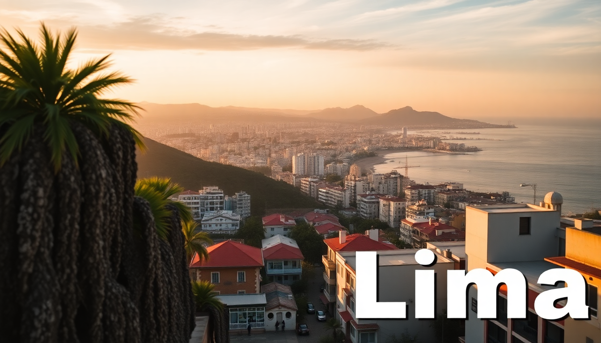

Where to Stay in Lima: Best Neighborhoods for Every Budget

I landed in Lima with no plan beyond “somewhere safe and near the coast.” After four trips and three different neighborhoods, I’ve got strong opinions. Here’s the honest breakdown of where to base yourself, what each area actually feels like at night, and where your money goes furthest.
What is the best neighborhood for first-time visitors on a mid-range budget?
Miraflores. It’s the default answer for a reason. We stayed at a small apartment near Parque Kennedy, and everything we needed was within a ten-minute walk — cevicherías, coffee shops, the Malecón cliffside path. It’s safe even late at night, and the bus to Barranco or San Isidro runs every few minutes.
- Hotel B in Miraflores is a boutique option with a rooftop bar overlooking the ocean, but expect to pay $150+ a night.
- For cheaper stays, Pariwana Hostel is loud but social, with dorm beds around $15.
- Eat at La Mar Cebichería for the best ceviche I’ve had in the city — expect to queue at lunch.
- The Malecón de Miraflores is a 10km coastal walking path; we did it every morning before the fog burned off.
If you’re on a tighter budget, skip the hotels on Avenida Larco (overpriced for what you get) and look for guesthouses one block off the Malecón. You’ll still be close to everything.
Is Barranco worth the hype, or is it too touristy?
Barranco is worth it, but it’s not for everyone. This is the artsy neighborhood — colorful murals, bohemian bars, and the famous Puente de los Suspiros. I found it less polished than Miraflores and more interesting. The downside: it gets packed with tourists on weekends, and some streets feel sketchy after midnight.
- Hotel B (yes, same name, different location) in Barranco is an art-filled mansion with rooms starting around $200. Worth a splurge if you care about design.
- Casa Republica Barranco is a boutique hostel with private rooms for $40–60 — we stayed there on our second trip and loved the courtyard.
- Tanta on Avenida Pedro de Osma serves excellent Peruvian comfort food; the lomo saltado is the move.
- Dédalo is a three-story gallery and shop — great for gifts, but don’t buy the overpriced alpaca scarves at the front.
Barranco is walkable during the day, but take an Uber or taxi back to your accommodation after 10 p.m. I walked alone once and regretted it.
Where should budget travelers stay without sacrificing safety?
San Isidro. It’s the financial district — quieter, greener, and less touristy than Miraflores. Hotels here are often cheaper because there’s less demand from travelers. We booked a room at Costa del Sol Wyndham for $70 a night, and it felt like a steal.
- Hotel San Isidro Inn has basic but clean doubles for around $50.
- Huaca Huallamarca is a pre-Inca pyramid right in the middle of the neighborhood — worth thirty minutes.
- La Tranquera on Calle Los Libertadores is a hole-in-the-wall chicken spot; a quarter chicken with fries and salad costs about $5.
- The Parque El Olivar is a gorgeous olive grove park — perfect for a quiet afternoon read.
San Isidro lacks nightlife and restaurant density, so you’ll need to bus or Uber to Miraflores for dinner (10–15 minutes, $3–5). But for sleep quality and value, it’s hard to beat.
Should I stay in Centro Histórico (downtown Lima)?
Only if you’re here for the colonial architecture and don’t mind a gritty edge. Centro Histórico has incredible sights — Plaza Mayor, the Cathedral of Lima, the Monasterio de San Francisco with its catacombs — but the neighborhood is chaotic during the day and empty after dark. I wouldn’t recommend staying here for more than two nights.
- Hotel Gran Bolívar is a classic 1920s hotel with a grand lobby and rooms from $60. It’s faded but charming.
- Museo de la Inquisición is free and fascinating — the underground torture chambers are eerie.
- Pizzeria Toto on Jirón de la Unión serves thin-crust pizza that’s been a local staple since the 1950s.
- Avoid the area around Avenida Abancay after 8 p.m.; it’s not dangerous per se, but you’ll feel isolated.
If you want to see the historic center, do it as a day trip from Miraflores or San Isidro. The Metropolitano bus takes 30 minutes and costs less than a dollar.
What about beachfront stays in Lima?
Lima’s coastline is mostly cliffs and rocky shores, not sandy beaches. The “beach” neighborhoods like Barranco and Miraflores are on bluffs above the water. If you want actual sand, you need to go south to Costa Verde or Playa Punta Hermosa — but those are 45 minutes from the city center and require a car or bus.
- Playa Makaha in Miraflores is the most accessible beach, but the water is cold and the current is strong. Locals surf here, not swim.
- Hotel Costa del Sol Larcomar sits right on the cliff above Makaha — ocean-view rooms from $120.
- Skip Playa Agua Dulce in Chorrillos; it’s dirty and crowded.
For most travelers, the Malecón views are more rewarding than the actual beaches. Don’t plan a beach vacation in Lima — save that for Mancora or Paracas.
Which neighborhood has the best food scene?
Miraflores and Barranco tie here, but for different reasons. Miraflores has the high-end restaurants (think Astrid y Gastón, which I found overpriced but beautifully plated). Barranco has the street food and casual spots where I actually wanted to eat twice.
- Isolina in Barranco serves Peruvian classics in a converted mansion — the causas are incredible.
- El Mercado in Miraflores is a market with stalls selling everything from anticuchos to fresh juices; lunch for two costs under $15.
- Panchita in Miraflores does a mean rotisserie chicken and the best alfajores I’ve had outside Buenos Aires.
- Canta Rana in Barranco is a tiny ceviche joint that locals swear by — cash only, no frills.
If you’re a serious eater, base yourself in Miraflores for the fine dining and take a taxi to Barranco for the casual stuff.
FAQ
Is Lima safe for solo travelers? Yes, in Miraflores, Barranco, and San Isidro. I’ve walked alone in these areas during the day and early evening without issues. Stick to main streets, avoid flashing valuables, and use Uber or taxi after dark. Centro Histórico and Callao are riskier — I wouldn’t walk around those after sunset.
What is the cheapest way to get around Lima? The Metropolitano bus system is efficient and costs about 3 soles ($0.80) per ride. It connects Miraflores, San Isidro, and Centro Histórico. For shorter trips, Uber is cheap and safer than hailing taxis on the street. Avoid the micro-buses (combis) unless you’re comfortable with crowded, chaotic transport.
How many days should I stay in Lima? Three to four days is enough to see the main sights and eat well. Two days in Miraflores or Barranco, one day for Centro Histórico, and one day for a day trip to the ruins at Pachacamac or the Ballestas Islands. Longer than that, and you’ll want to move on to Cusco or the Sacred Valley.
Conclusion
- Miraflores is the safe, convenient pick for first-timers and food lovers — mid-range hotels start around $60.
- Barranco offers more character and nightlife but feels less polished after dark — best for couples or groups.
- San Isidro is the budget-friendly sleep option — quiet, clean, and close to everything by bus.
- Centro Histórico is worth a day trip but not a long stay — save your hotel budget for the coast.
- Skip beachfront stays in Lima unless you’re surfing; the water is cold and the sand is mediocre.